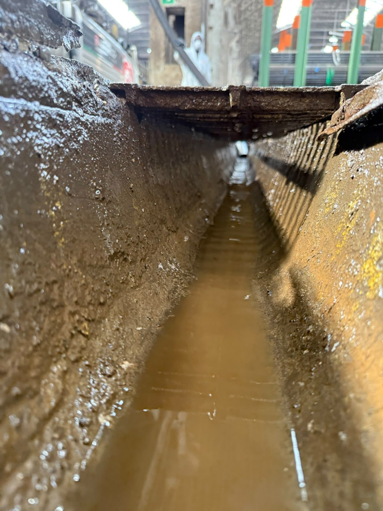
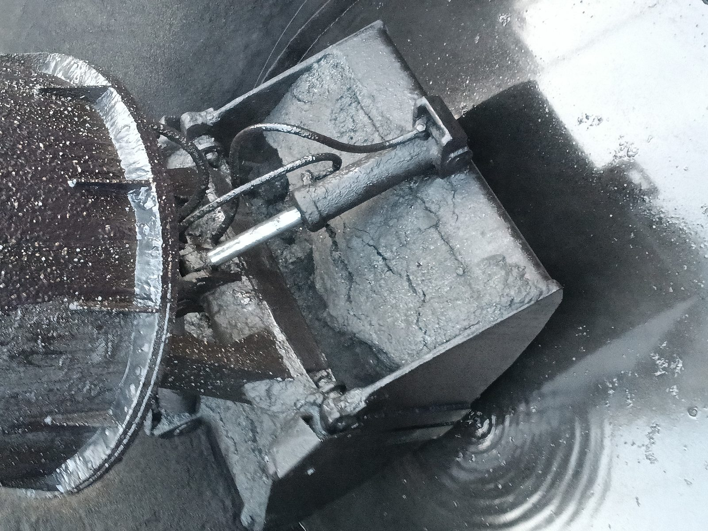
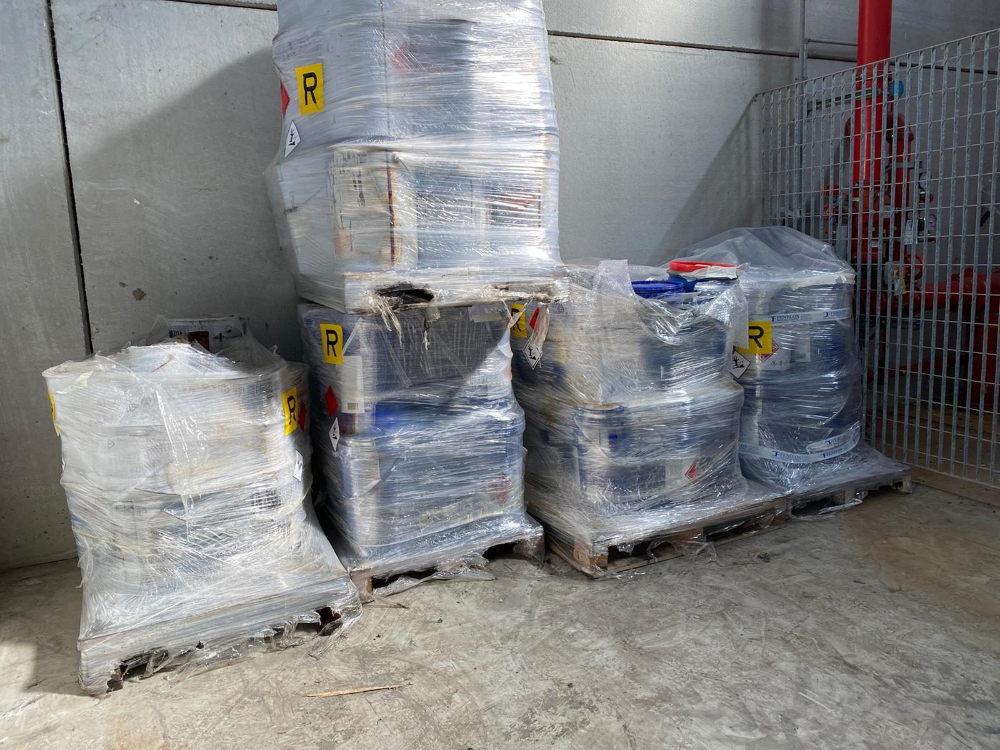

Ordine di Brescia
N. 344, sezione A. 9 giugno 2022.
Apri il PDFDottore chimico · Albo di Brescia 344 A · ADR / RID
Gestione rifiuti, sicurezza e conformità normativa per chi cerca un interlocutore che ha già risolto il problema prima ancora che si presenti.
Profilo
Matteo Piemonti è perito chimico e laureato in Chimica Applicata e Ambientale (Università degli Studi di Milano) e in Scienze e Tecnologie Chimiche (Università degli Studi di Milano-Bicocca). Iscritto all’Ordine dei Chimici e dei Fisici di Brescia, n. 344 sezione A.
Da oltre dieci anni opera nel settore ambientale e della gestione dei rifiuti, in un percorso che ha attraversato più fasi del ciclo: dalla ricerca su impianti di biogas alimentati da matrici non convenzionali — scarti della produzione di olio di palma, fanghi di depurazione industriali — alla responsabilità di laboratorio di controllo qualità nel recupero di pneumatici fuori uso, con partecipazione a tavoli di lavoro per l’aggiornamento della normativa UNI. Ha proseguito nella gestione di laboratori interni presso discariche del Nord Italia, occupandosi di scadenze AIA, campionamenti ed emissioni in atmosfera, fino alla direzione di un impianto di trattamento rifiuti pericolosi e non pericolosi.
Oggi ricopre il ruolo di responsabile della gestione rifiuti in ambito industriale e affianca a questo incarico l’attività di consulenza e formazione ad aziende e organizzazioni, come auditor per i sistemi di gestione ISO 9001, 14001 e 45001 e come consulente certificato ADR-RID per il trasporto delle merci pericolose, tutte le classi, compresa la 7.
Il tratto distintivo è la concretezza: una conoscenza dei cicli produttivi e della gestione del rifiuto costruita sul campo, non solo sui manuali — la capacità di capire un processo perché lo si è visto, misurato e gestito di persona.
Titoli
N. 344, sezione A. 9 giugno 2022.
Apri il PDFCertificato CE C07142. Tutte le classi. Fino al 28 novembre 2027.
Apri il PDFWG1 CEN/TC 366 — CEN/TS 14243. Milano, 5 luglio 2016.
Apri il PDFMandato
Oggi: gestione rifiuti, audit ISO 9001 · 14001 · 45001, consulenza e formazione ADR/RID.
Classificazione, caratterizzazione, AIA, registri, organizzazione di impianto.
Sistemi 9001, 14001, 45001. Verifica e tenuta del sistema rispetto all’operatività.
Certificato CE n. C07142. Strada e ferrovia, tutte le classi, compresa la 7. Fino al 28/11/2027.
Corsi a numero chiuso. Accesso riservato.
Campo



Riservato
Accesso consentito.
Guardi la presentazione per intero. A fine video conferma e si apre il test.
Il test si apre dopo la conferma a fine presentazione.
Studio
Roccafranca (BS)